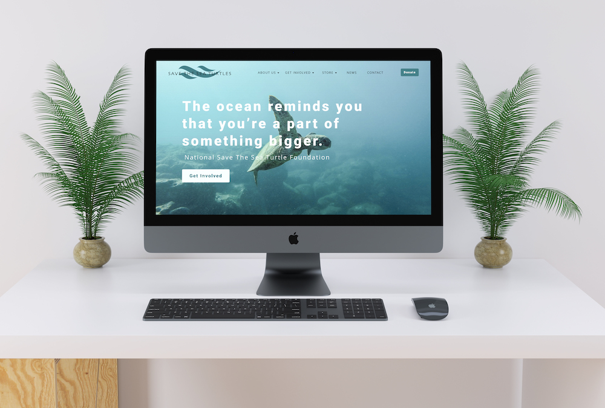
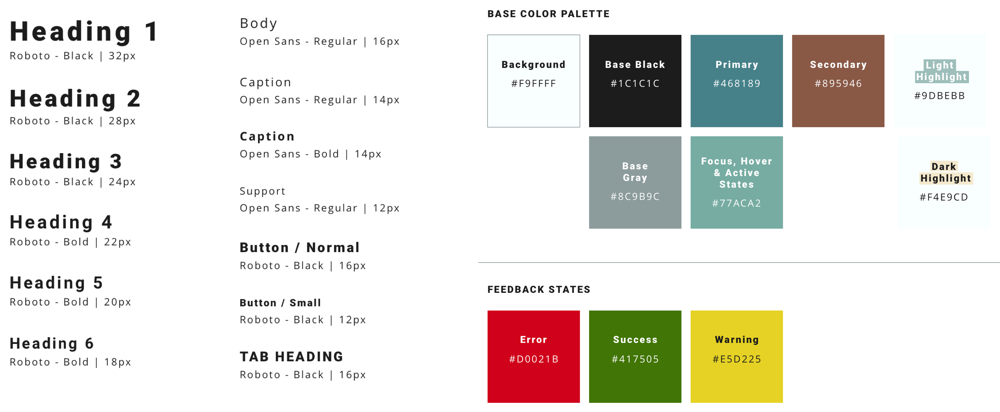
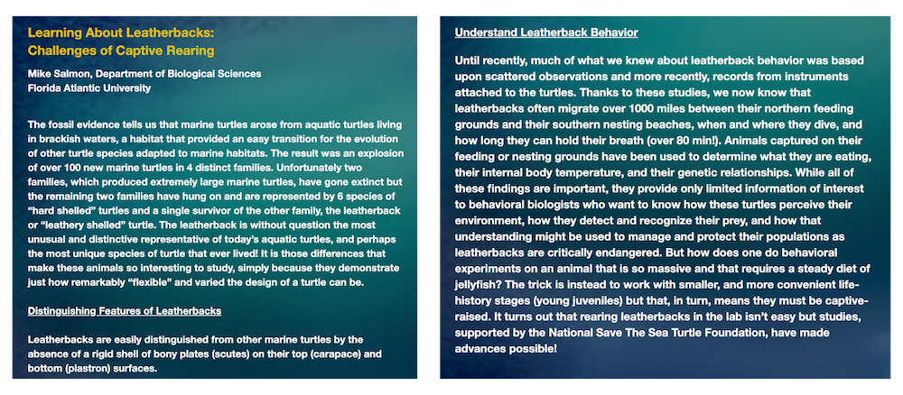
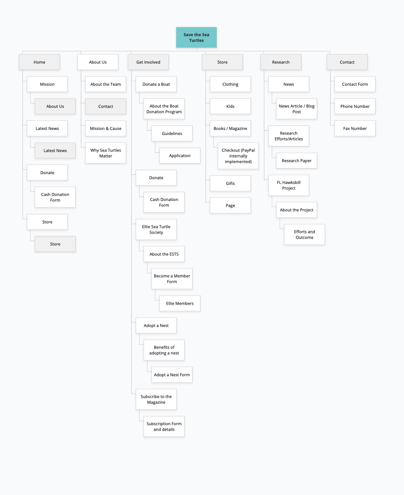
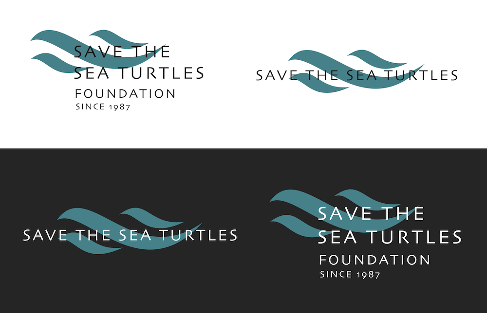
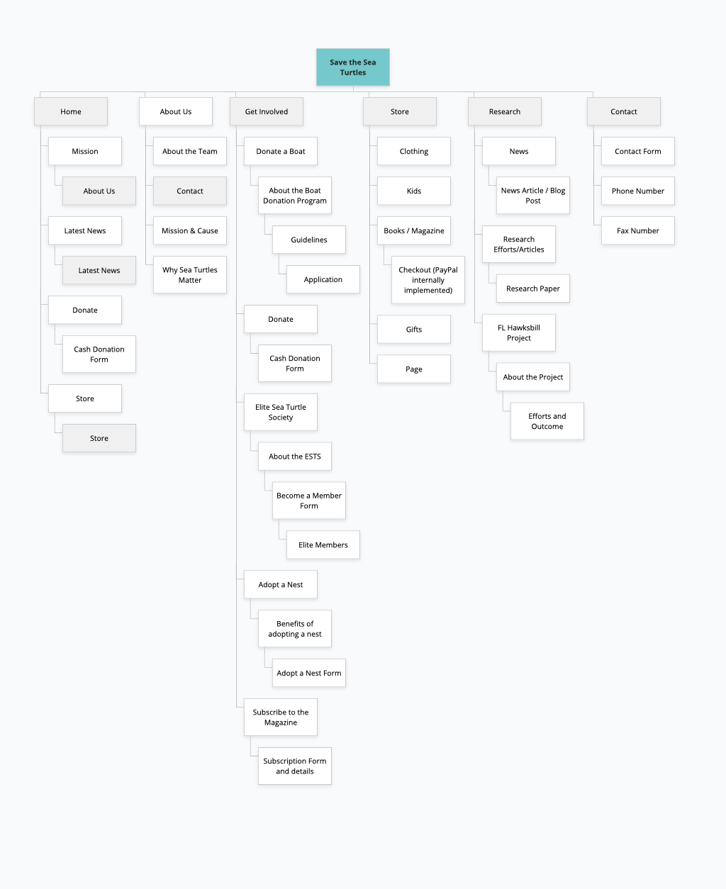
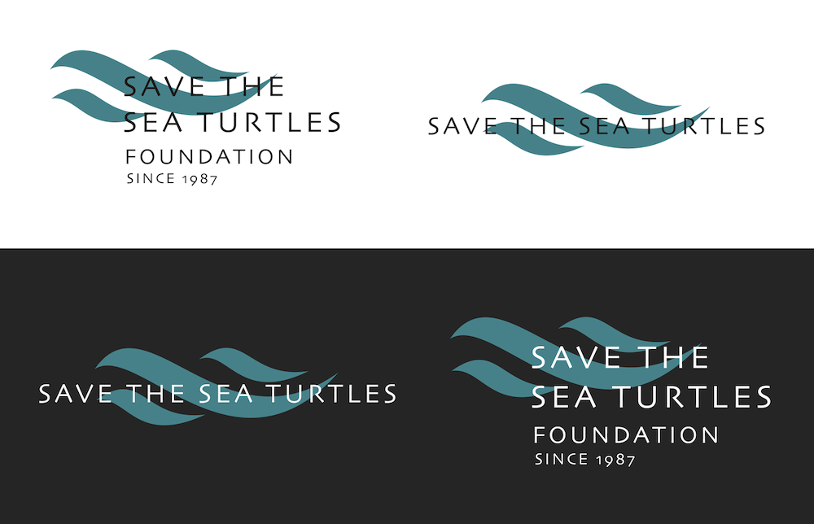
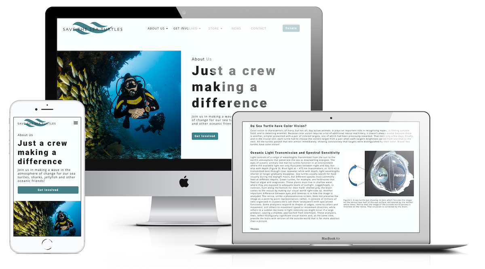

Save the Sea Turtles Foundation
View Site Overview
Save the Sea Turtles Foundation is a non-profit organization founded on Florida’s coast in 1987 aimed to support students, professionals and academic research efforts in the world of Marine Biology. With a specialization in sea turtles other marine life like sharks and jellyfish are also under their research umbrella.
Their mission and impact on our waters is incredibly powerful while their current website lacked this emotion. Especially since the foundation collects donations, runs a store and a membership program all from their website, it was due for a major refactor.
The Team
Rachel (me!)
UX Designer & DeveloperErin
Project ManagerRoss
Marketing & StrategyRicky
CopywriterUX Audit
View Audit ReportI love a chance to implement user-centered methodologies in projects and educating clients on how impactful a good design really is. As seen in the report above, the list of site issues is tremendous. To save you the trouble, here are some of the major pain points their current site occupied.
-
Accessibility. The foundation caters to individuals of all ages.
As you’ll soon see below, we interviewed two users out of many that support the foundation.
One user was 20 years old and one was 62 years old. This age gap comes a variety of accessibility
concerns like...
Color-blindness: mostly males of any age rely on high color contrast and iconography beyond basic color to differentiate site components
Low-vision: young and old users can face poor vision
High expectations: younger users are familiar with using quality applications in their day-to-day lives making it more noticeable when an application does not meet those standards
Keyboard-only usage: a website should be navigable without a mouse or it can be deemed unusable by visitors who rely on their keyboard
To combat this, we established a style guide with an AA-compliant color-palette, digitally readable typeface and high-quality, impactful imagery.  -
Emotion. A key aspect of non-profit organizations as seen with major societies like ASPCA,
Sea Legacy and Oceana is emotion.
I wrote a content analysis case study specifically about the positive turn-around of emotional design.
Large, emotional imagery is a common theme with websites conveying sentiment as well as colloquial language rather than technical talk. In user testing, an interviewee was put off by the site’s difficult-to-read academic verbiage.
Read the content analysis case study
Also to note: there was a lack of font hierarchy. The headings appear as if they were links and are the same font weight and size as the body text. The body text is bolded as well which makes it more difficult to read and differentiate blocks of text. The titles were shown in yellow which is inaccessible to classes of color-blindness on the blue background.  -
Four different sites. You read that right, the Foundation’s site is a combination of four
different sites with different URLs. The user is unknowingly bounced around these multiple sites under the
same roof with no way of going back. Not ideal.
We proposed a new information architecture that housed all paths of the site under the same URL. This will then save the organization the cost of server space and audience loss.
Original Sitemap Proposed Sitemap

An established logo designed in the top navigation and
footer reassures the user that they are within the same organization throughout the site.

Proposed Sitemap

An established logo designed in the top navigation and
footer reassures the user that they are within the same organization throughout the site.

-
Incorrect Components. Throughout the site there were components that acted as others which
was a trend in past digital eras. This spoke to the dated-ness of the site.
Our solution relied on our object-oriented style guide with predefined components like buttons, input fields, navigation bars etc.
User Feedback
To gather user-centered pain points that were scattered throughout the current site, we pulled two involved users.
One of which was Rick, a 62-year-old father of a marine biologist. The other was Karey, a 20-year-old friend of a
dedicated biology student.
We had them walk-through a real-life scenario of a task they would actually complete via the think aloud protocol.
The results reiterated our findings and helped us focus on areas of improvement.
Responsive Design
The current site did not meet the digitally-responsive standards our devices now live in. That said,
we designed interfaces that complimented viewports for small mobile phones, tablets and larger desktops
alongside the common desktop size.
Style guides and design systems make it pretty easy to mock up wireframes in higher fidelity. Especially since this
site was information-heavy, building out wireframes with faux iconography and illustrations helped give me a better idea on
whether or not to rework the brainstormed board.
Implementing the Style Guide
By incorporating our style guide and proposed IA, we found tasks were better completed and users were able to find what they needed about the organization. Our marketing strategist gathered quality images for the organization to legally include on their site. We used our colors, typography and components to bring the wireframes to life!
We also included empty state and error page screens. Their current site lacked inline validation, feedback and error screens. We wanted to offer empty state screens if a user’s cart were empty, they send a message or they miss forget a form field.
Development
View SiteIn development, we provided an HTML/SASS/JS shell containing SASS partials of our style guide, helper classes, image assets and predefined design components. By providing the team a unique, object-oriented UI library, we can speed up the build process, save money and maintain a single, cohesive experience as planned.